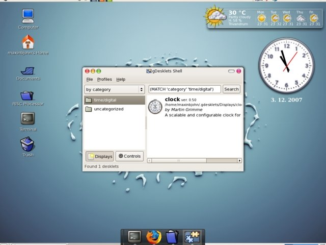
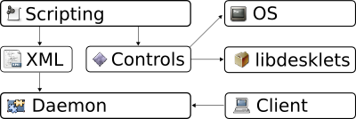
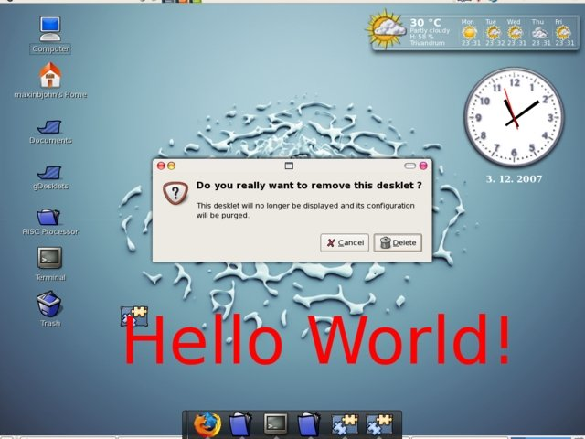
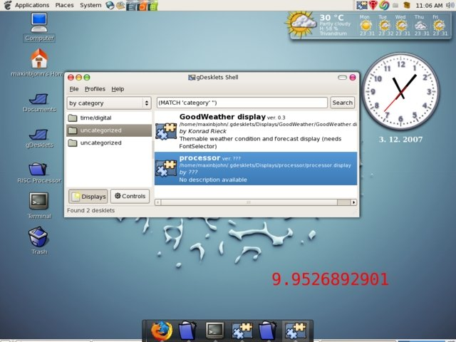
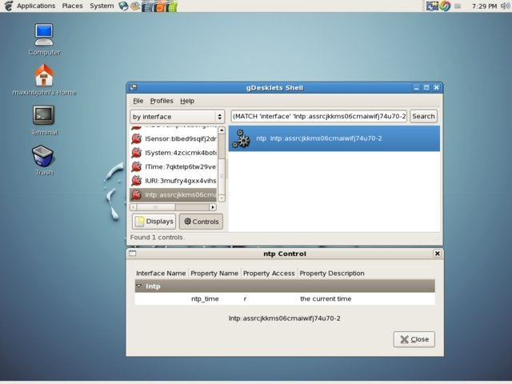

gDesklets: Beauty with a Purpose
A Quest for Beauty
gDesklets provides a bunch of easy-to-use yet eye-pleasing applications for the GNU/Linux desktop. Mini-applications called desklets can be developed and executed for the desktop to meet specific needs. Since gDesklets is known to work on KDE and XFCE, along with GNOME, it can provide an enchanting look to the Linux Desktop.
Installing gDesklets
In the case of Debian Etch or Ubuntu 7.xx, installation of gDesklets is as easy as
apt-get install gdesklets
For Fedora users, add the 'freshrpms' repository to the list of repositories for yum. For that, create a 'freshrpm.repo' file in your /etc/yum.repos.d/ directory. The content of the file should be:
[freshrpms] name=FreshRPMs for Fedora Core $releasever - $basearch baseurl=http://ayo.freshrpms.net/fedora/linux/$releasever/$basearch/freshrpms enabled=1 gpgcheck=1 gpgkey=http://freshrpms.net/RPM-GPG-KEY-freshrpms
Now, issue the command
yum install gdesklet
This will install gDesklets on your machine.
For other distributions, source code for the latest gDesklets can be downloaded from http://www.gdesklets.de/ [1]. Following the steps listed below will install gDesklets onto your machine:
wget http://www.gdesklets.de/files/gDesklets-0.35.4.tar.bz2 tar jxvf gDesklets-0.35.4.tar.bz2 cd gDesklets-0.35.4 ./configure make make install
[ When installing software from source, please make sure to never run the steps tar x ..., ./configure and make as root. Always use a non-privileged user account for these steps. -- René ]
We can invoke the gDesklets program by issuing the command "gdesklet" in the shell, or by selecting gDesklets via Applications -> accessories -> gDesklets. However, remember to start it as an ordinary user - you won't be able to invoke gDesklets as the "root" user. Some desklets to be used with gDesklets can be downloaded from the gDesklets Web site. The downloaded desklets can be installed into your system with the help of the gDesklet manager application; to install them, just drag and drop the downloaded *.tar.gz files on the gDesklets manager icon.

The gDesklets Framework
gDesklets is implemented in Python, which is an interpreted, interactive, object-oriented, extensible programming language. The gDesklets' framework looks like this:

- A daemon runs in the background as a server, providing a socket for communication. Clients connect to the socket to give instructions to the daemon, which is responsible for loading and running applets.
- The user interface of applets is defined by ADL, a simple yet powerful XML-based language.
- The XML-defined user interface can be brought to life with inline scripts - i.e., Python scripts that are directly written into the XML or imported there to be executed in a secure sandbox.
- The libdesklets library can be used to assist implementation of sandboxed Python scripting. Sandboxed scripting code uses controls to access otherwise unreachable data. Basically, they provide a controlled way to access data outside the sandbox.
A gDesklet Hello, World
The main advantages of Python lie in its clarity and ease of use. Since gDesklets is written in Python, it is both elegant and simple.
Now, let's create our very first desklet. The file structure of an ordinary gDesklet is:
hello.tar.gz: ->hello/ ->hello/helloworld.display ->hello/hello.png
(The content of 'hello.display' is available here.)

The meta tag contains information about your desklet - e.g., the name of the author, name of the desklet, the version, etc. - which can be viewed in the gDesklets manager application. The meta tag is optional for every desklet; the preview file ("hello.png", in this case) is also optional.
To create our desklet and load it in the gDesklet manager application, perform the following steps:
mkdir hello cp helloworld.display hello cp hello.png hello tar czvf hello.tar.gz hello
Now, the desklet is ready for use and can be loaded into the gDesklets manager. After installation, it can be removed by simply clicking on the desklet and choosing the 'remove' option.
Using the Controls in gDesklets
The controls in gDesklets allow your inline scripts access to any kind of data with the help of the 'gdesklets' library. This mechanism maintains the integrity and security of the sandbox scripting environment which is the backbone of the gDesklets. In effect, controls help to share the functionality among desklets without duplicating it. Let's create another simple gDesklet that uses a control to show the second-by-second load average of the processor.
The content of processor.display is available here.
The control tag loads a particular control by the cited interface, and binds it to the cited ID. The first step in using the control in your desklet is to find the control's unique interface identity. For the System interface, which provides information like CPU load, network statistics, memory statistics, etc., the unique interface string is ISystem:4zcicmk4botcub7iypo46t2l7-2. The corresponding unique interface string for each control is obtained from the gDesklets manager application, by browsing through the controls installed in the system.
Then pack the processor desklet, just like we did before:
processor.tar.gz: ->processor/ ->processor/processor.display
Now the processor desklet is ready for deployment via the gDesket manager application. See our desklet in action:

Plotting the Network Usage Graph
The plotter element in gDesklets allows us to generate graphs of various data such as processor usage, free memory available, network speed, etc. in real time on our desktop. Now, let's dare to plot a real-time graph that shows the number of incoming packets on our eth0 network interface.
(The content of netspeed.display is available here.)
Now, as usual, create the desklet (netspeed.tar.gz) using the netspeed.display file.
netspeed.tar.gz: ->netspeed/ ->netspeed/netspeed.display
Let's create our own control
The real power of gDesklets lies in the fact that the user can extend its capabilities by writing his or her own controls. Controls are Python classes derived from the Control base class and from the interfaces they implement. Now, let's see how to roll a simple control of our own. Since the control needs to be verified, we will also write a small desklet that uses our "home-made" control.
Most of the controls live in /usr/lib/gdesklets/Controls. We'll create an 'ntp' directory there, and create a control to retrieve the precise time by contacting an NTP server. The Network Time Protocol is a protocol used for synchronizing the clocks of computer systems over packet-switched, variable-latency data networks. Through the gDesklet control and desklet, we will contact the Red Hat NTP server (0.fedora.pool.ntp.org), fetch the time, and display it on the desktop. Please note that this desklet won't be syncing the clocks; it will be just displaying the precise time on the desktop.
The control directory has to include all interface files from which the control inherits. Usually, the filenames of interface files start with an "I" - so here the name of the interface file is Intp.py. The __init__.py is a mandatory file for a control. Every property in the interfaces must be implemented by creating appropriate property objects.
The directory structure of a simple control (here, ntp) looks like this:
ntp/ Intp.py __init__.py
The Intp.py file is:
from libdesklets.controls import Interface, Permission
class Intp(Interface):
ntp_time = Permission.READ
The __init__.py file is:
from libdesklets.controls import Control
from Intp import Intp
from socket import *
import struct
import sys
import time
class ntp(Control, Intp):
def __init__(self):
Control.__init__(self)
pass
def __get_time(self):
Server = ''
EPOCH = 2208988800L
Server = '0.fedora.pool.ntp.org'
client = socket( AF_INET, SOCK_DGRAM )
data = '\x1b' + 47 * '\0'
client.sendto( data, ( Server, 123 ))
data, address = client.recvfrom( 1024 )
if data:
t = struct.unpack( '!12I', data )[10]
t -= EPOCH
return time.ctime(t)
ntp_time= property(__get_time, doc = "the current time")
def get_class():
return ntp
The interface identifiers are made up of a human-readable name given by the interface's author and a random-looking string. That string is based on a checksum of the interface, and is affected by any changes to the interface, except for changes in comments in the desklet code. The gDesklets manager program will auto-generate the interface identifier for each control, so we don't have to worry about the interface identifier for our NTP control.

Verification program for our control.
Then, pack the processor desklet, like this:
ntptest.tar.gz: ->ntptest/ ->ntptest/ntptest.display
Now the processor desklet as well as the control is ready for use.
Conclusion
gDesklets is an answer to those who complain that Linux is a geek's operating system; it adds spice to the capabilities of Linux by combining beauty and purpose on the Linux desktop. It also makes life a bit easier for the common GNU/Linux desktop user.
Reference
The main source of information about gDesklets is http://www.gdesklets.de/. The Developer's Book is available at http://develbook.gdesklets.de/book.html.
[1] Rick Moen comments: This is called fetching an "upstream tarball", as opposed to a maintained package tailored for the user's Linux distribution, and in my considered view should be a last-resort method of installing any significant software, if one is absolutely certain that no package from or for one's distribution exists. There are several compelling reasons for this preference, and I detailed them a few years ago, when this matter last came up.
Talkback: Discuss this article with The Answer Gang
I am an ardent fan of GNU/Linux from India. I admire the power,
stability and flexibility offered by Linux. I must thank my guru, Mr.
Pramode C. E., for introducing me to the fascinating world of Linux.
I have completed my Masters in Computer Applications from Govt.
Engineering College, Thrissur (Kerala, India) and am presently working at
Ushus Technologies, Thiruvananthapuram, India, as a Software Engineer.
In my spare time, you can find me fiddling with Free Software, free
diving into the depths of Ashtamudi Lake, and practicing Yoga. My other
areas of interest include Python, device drivers, and embedded
systems.